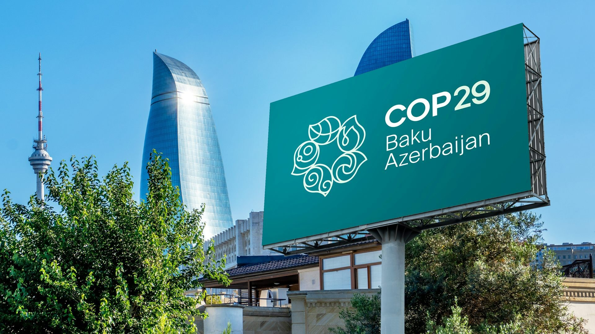

KERJASAMA MULTILATERAL
Kerja sama Multilateral merupakan bentuk kerja sama internasional yang melibatkan tiga negara atau lebih dalam suatu forum internasional untuk mencapai tujuan bersama. Tujuan yang ingin dicapai biasanya bersifat global seperti perdamaian dunia, perubahan iklim, atau perlindungan hak asasi manusia. Kerja sama ini juga sering dilakukan dalam bentuk perjanjian atau organisasi internasional seperti Perserikatan Bangsa-Bangsa (PBB), Organisasi Perdagangan Dunia (WTO).
! United Nations Framework Convention on Climate Change (UNFCCC) !
Pada 22 November 2024 telah diadakannya COP29 (Conference of the Parties 29) yang merupakan pertemuan tahunan negara-negara yang tergabung dalam UNFCCC untuk membahas dan merundingkan langkah-langkah internasional dalam upaya mengatasi perubahan iklim. COP29 pada tahun ini dilaksanakan di Baku, Azerbaijan, dimana negara-negara berusaha untuk mencapai kesepakatan mengenai pendanaan iklim dari setiap negara. Namun konferensi ini diperpanjang karena negosiator dari hampir 200 negara masih berjuang untuk mencapai konsensus tentang rencana pendanaan iklim pada dekade berikutnya.
Delegasi dari negara-negara miskin keluar dari perundingan COP29 karena frustasi dengan kurangnya inklusi dalam proses negosiasi. Mereka merasa bahwa suara mereka tidak didengar dalam pembahasan yang berfokus pada pendanaan iklim yang penting bagi negara-negara yang paling terdampak oleh perubahan iklim. KTT langsung membahas inti permasalahan mengenai tanggung jawab keuangan negara-negara industri karena telah menggunakan bahan bakar fosil dan telah menyebabkan sebagian besar emisi gas rumah kaca. Salah satu bentuk tanggung jawab mereka adalah dengan memberikan kompensasi terkait dana kepada negara lain atas kerusakan yang telah disebabkan.
Negara-negara maju harus membayar sekitar $300 miliar per tahun pada 2035 untuk membantu negara miskin menghadapi perubahan iklim. Ini termasuk dalam perundingan iklim PBB yang berusaha memenuhinya setelah sebelumnya ditolak akibat target $250 miliar. Negara-negara kaya seperti Uni Eropa dan Amerika Serikat bertanggung jawab memberikan dana ini untuk mendukung mitigasi dan adaptasi iklim. Sedangkan negara berkembang atau negara miskin tidak diminta untuk memberikan kontribusi besar tetapi sesuai kapasitas mereka.